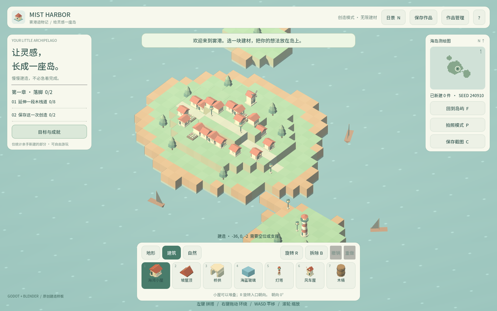
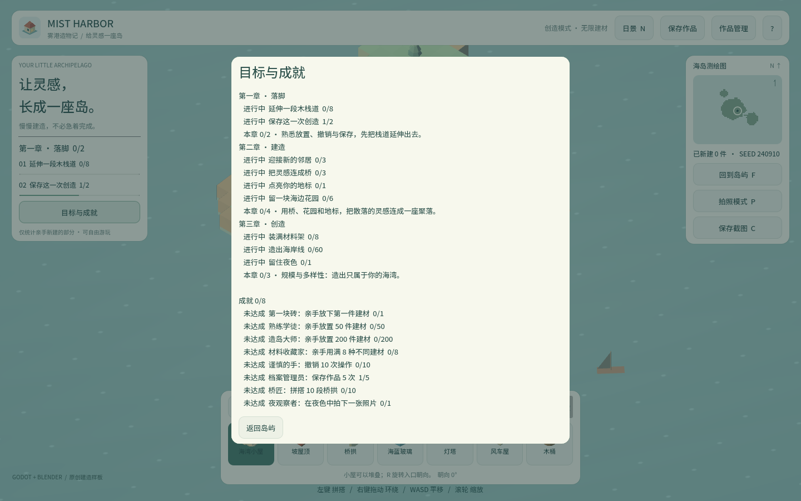

卷 4 · 第 22 章 章节引导：把"随便玩"变成"有目标的练习"
本章目标：读懂三章小目标系统——进度是算出来的，不是记出来的，
以及复合目标（garden/journal）怎么表达"做两件事"。
对应任务：T21 / T22 | 对应文件：data/objectives.json、main.gd的目标部分
22.1 目标就是数据
{"id":"boardwalk","chapter":1,"title":"延伸一段木栈道",
"description":"亲手放置 8 块木栈道","kind":"wood","target":8}| 字段 | 作用 |
|---|---|
| --- | --- |
chapter | 归属章节（1–3） |
kind | 进度计算方式（多数是建材 id，少数是复合类型） |
target | 达标阈值 |
title / description | 展示文案 |
三章共 9 条目标：
| 章 | 目标 |
|---|---|
| --- | --- |
| 一 · 落脚 | 放 8 块木栈道 · 撤销一次并保存一次（journal） |
| 二 · 建造 | 3 间小屋 · 3 段桥拱 · 1 座灯塔 · 3 树 + 3 花（garden） |
| 三 · 创造 | 用满 8 种建材（variety）· 放 60 件（total）· 夜景拍一张（night_photo） |
22.2 进度算出来，而不是记出来
func _objective_amount(goal, counts) -> int:
var key := str(goal["kind"])
if key == "garden":
return mini(3, counts.get("tree", 0)) + mini(3, counts.get("flower", 0))
if key == "journal":
return mini(1, model.stats.get("saved", 0)) + mini(1, model.stats.get("undone", 0))
if key == "variety":
return 用了几种建材
if key == "total":
return model.placed_count()
if key == "night_photo":
return photo_stats["night_photos"]
return int(counts.get(key, 0)) # 默认：按建材 id 计数关键点：没有"目标进度表"这种持久状态。
每次打开进度面板，从当前世界 + 统计重新计算。
好处：
- 载入别人的存档 → 进度自动正确
- 撤销/拆除后进度会回退（诚实反映当前状态）
- 新增目标只要加一行 JSON，不用改状态机
22.3 复合目标的 mini() 技巧
# garden：树 3 + 花 3，各自封顶 3
mini(3, tree_count) + mini(3, flower_count)
# journal：保存 1 次 + 撤销 1 次，各自封顶 1
mini(1, saved) + mini(1, undone)为什么用 mini 封顶？
否则"种 10 棵树"会把 garden 进度顶到 10/6，看起来超了却不完成——
封顶让每一子项最多贡献它该贡献的份额，进度条语义清晰。
📌 这是一个很实用的小模式：复合目标 = 若干封顶子项之和。
22.4 当前章节：第一条未完成的目标所在章
func _current_chapter() -> Dictionary:
for chapter in chapters:
for goal in _chapter_objectives(chapter["id"]):
if _objective_amount(goal, model.player_counts()) < int(goal["target"]):
return chapter
return chapters[chapters.size() - 1] # 全完成 → 停在最后一章顶栏显示的章节标题由此推导。
注意返回最后一章而非空字典——全通关时 UI 不会崩，这是防御性写法。
22.5 引导的边界：它是"练习题"不是"评分"
objectives.json 开头就写明：
"note":"仅用于本地自练；进度由当前作品与操作记录计算，不自动代替教师评分。"这条注释很重要：引导系统给方向，不给结论。
教师/直播主可以在此基础上加自己的评分或作业要求。
🌩 在云端 agent（web-cb）里是什么样
| 🖥 本地路线 | 🌩 云端 agent（web-cb） | |
|---|---|---|
| --- | --- | --- |
| 目标数据 | res://data/objectives.json | 同；改 JSON 即可定制课程路线 |
| 进度计算 | 运行时算 | 同，纯逻辑，可单测（L1 有覆盖） |
| 教学用法 | 自练 | 云端可给每个学员下发不同的 objectives.json（分班/分难度） |
| 注意 | — | 目标只反映"当前作品"，换存档就不再适用（设计如此） |
🌩 云端最有价值的用法：把
objectives.json当成可下发的教学大纲，
同一份游戏，不同班级看到不同的三章目标。
22.6 常见坑速查（本章）
| 现象 | 原因 | 处理 |
|---|---|---|
| --- | --- | --- |
| 进度条超过 100% | 复合目标没封顶 | 用 mini(子项上限, 值) |
| 撤销后目标仍显示完成 | 进度被持久化了 | 改为每次重算 |
| 换了存档进度不对 | 进度与存档绑定 | 这是设计：进度反映当前作品 |
| 加目标后 UI 没显示 | 没配 chapter | 必须归属某一章 |
| 全完成后章节标题空 | 返回了空字典 | 兜底返回最后一章 |
22.7 本章作业
- 说明为什么进度要"算"而不是"记"，列出两个好处
- 解释
garden的mini(3, …)封顶为何必要，举一个不封顶会出错的数字例子 - 在
objectives.json里加一条第三章目标（例如"放 5 个木桶"，kind:"barrel"），验证进度面板出现它 - 思考：
night_photo的数据来自photo_stats而非model，这说明什么？（提示：第 24 章）
🎓 教学提示（给教师 / 直播主）
- 概念锚点：进度 = 数据的投影。没有"进度状态"，就没有"状态不一致"。
- 课堂演示：改
objectives.json的 target，刷新看面板立刻变化（无需改代码）。 - 高频误解：学生想给每个目标存一个
completed: bool。讨论：撤销后怎么办？ - 讨论题：如果要做"成就链"（完成 A 才解锁 B），数据结构怎么加？
- 批改要点：作业 2 要给出具体数字（如 10 棵树 → 10/6 却不完成）。
🖼 本章图集


📹 录屏分镜（8 分钟）
| 时间 | 画面 | 解说词要点 |
|---|---|---|
| --- | --- | --- |
| 00:00–01:30 | 三章九条目标 + JSON 结构 | "目标是数据。" |
| 01:30–03:00 | _objective_amount 逐分支 | "进度是算出来的。" |
| 03:00–04:30 | mini 封顶的必要性（数字演示） | "每子项只贡献该贡献的。" |
| 04:30–06:00 | 当前章节推导 + 兜底 | |
| 06:00–08:00 | 引导的边界 + 作业 |
🎬 视频位（待录制）
把录好的视频放到course/media/video/22/（mp4 / webm / mov），重新执行 python tools/course_build.py 即会自动内嵌；首帧默认用本章第一张截图作为封面。分镜脚本见上一节。🖼 配图清单
| 文件名 | 内容 | 生成方式 |
|---|---|---|
| --- | --- | --- |
22-progress-panel.png | 目标与成就面板（三章进度） | python tools/course_capture.py --chapter 22 |
22-chapter-title.png | 顶栏当前章节标题 | 同上 |
🎥 直播脚本（L3 片段，10 分钟）
- 开场："进度条该存起来还是算出来？"——投票
- 演示：现场改 objectives.json 的 target，刷新看变化
- 互动：让观众为自己的课程设计三章目标
- 收尾：预告成就系统
❓ 本章 FAQ
Q：目标完成后能"领取奖励"吗？
A：当前没有奖励机制，目标只是方向指引；奖励类需求由成就系统承担（第 23 章）。
Q：kind 能随便加吗？
A：能，但要在 _objective_amount() 里加对应分支，否则会走"按建材 id 计数"的兜底。
Q：起始村庄的建材会计入目标吗？
A：不会——player_counts() 只统计 natural == false 的格子（第 19 章）。